git命令的使用
之前我们讲了git就是一个本地的版本库，所以接下来我们将了解如何去使用这个版本库进行与网络上的版本库的同步。
第一步、本地新建存放项目的文件夹
此时有两种途径可以使gitbash进入到项目文件夹:
1.可以在该文件夹直接右键打开gitbash
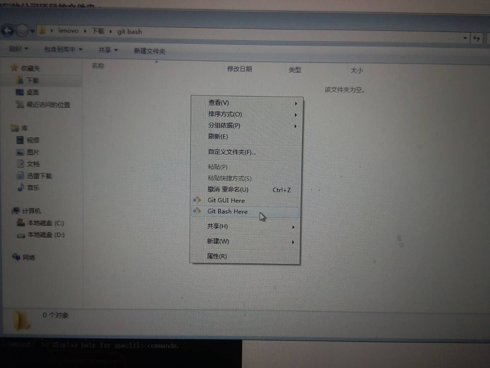
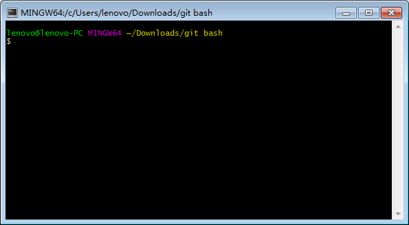
2.或者直接启动GitBash程序，然后使用cd命令进入创建好的文件夹:
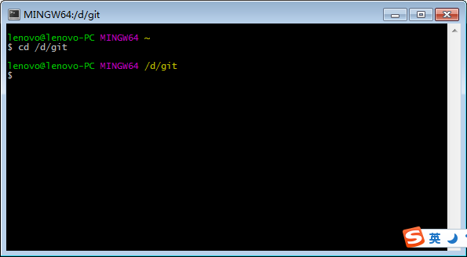
第二步、使用git clone命令，将github上面的代码克隆到本地
- 首先，打开公司已创建好的github项目目录，找到代码地址
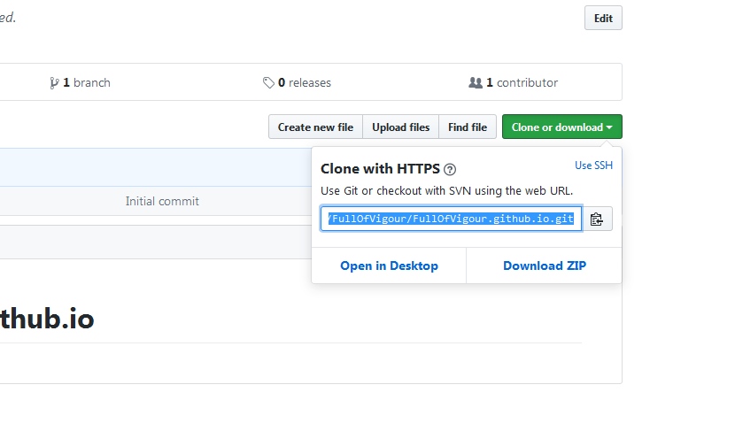
- 然后，使用git clone命令，将代码克隆到本地,gitbash进入下载状态
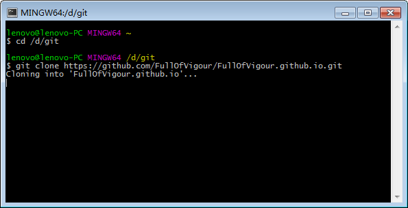
- 克隆完成！
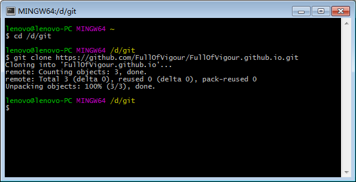
本地文件夹下面就有了
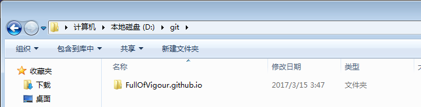
第三步、进入刚开始创建的源代码存放文件夹
使用cd命令，在gitbash中进入下载后的源代码文件夹FullOfVigour.github.io
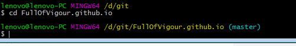
第四步、修改项目内容
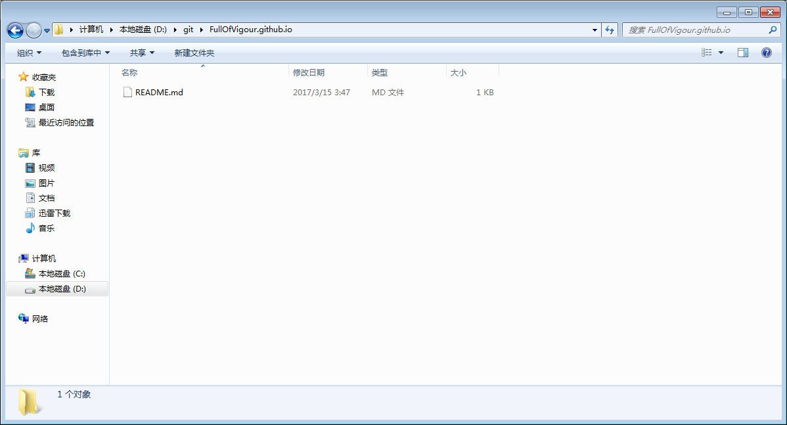
比如说我在该文件夹下创建了一个index.html

使用git status命令可以检测到当前修改，被改动的文件夹以红名形式显示：
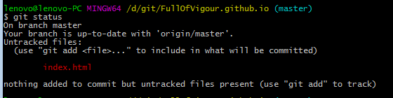
第五步、将改动添加到本地版本库
修改完成后，我们使用git add 命令将被修改的文件添加到本地版本库：
(ps:git add后面可以直接加文件的名称，表示添加这条文件到版本库；也可以使用 git add . 命令，添加所有修改到版本库.)
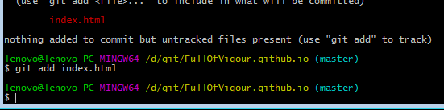
添加完成后 git status获取当前状态
(ps:添加成功后，文件名称会变成绿色)
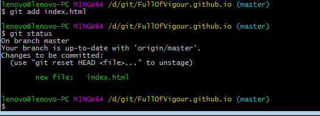
第六步、将github仓库代码pull到本地
在确定本地版本之前，需要将github上面的代码同步到本地，以防止多人协作时，出现代码冲突。
(ps:这个比较复杂，是有关于多人协作任务的，这里不进行讲解)
同步到本地命令：git pull
(ps:Already up-to-date.代表“已同步”)
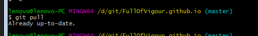
第七步、使用git commit命令，将本地确认修改的文件保存到本地版本库
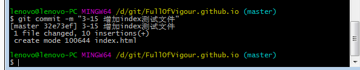
这里的git commit -m ""引号内的文字会在仓库中显示，注释修改了什么内容
第八步、使用git push origin master命令将本地最后保存的版本库发送到github仓库
此处会提示输入账号密码
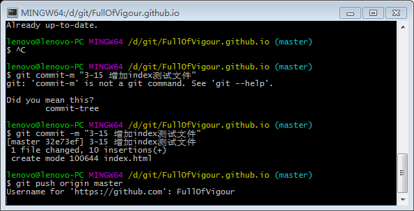
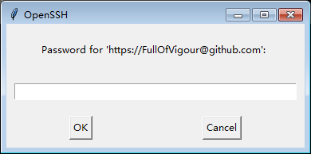
发送成功！
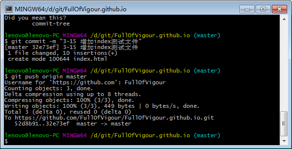
此时,刷新github仓库，即可以发现我们所做的修改
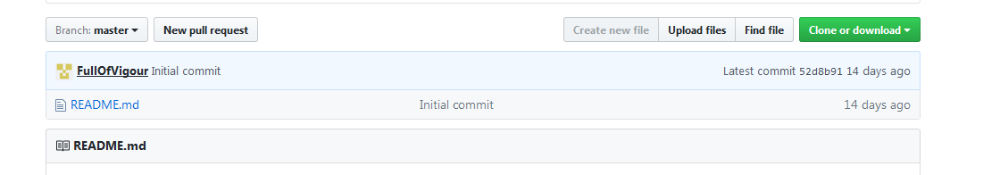
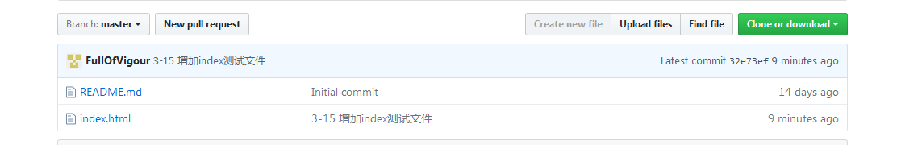